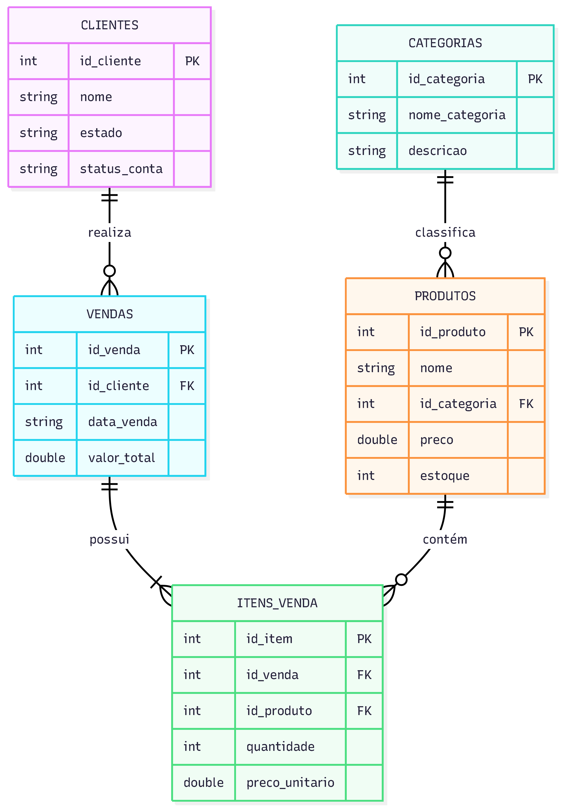

Data Platform: E-commerce Architecture
Implementação de uma infraestrutura de dados utilizando Apache Spark, verificando o comportamento transacional entre Delta Lake e Apache Iceberg.
Pilares do Projeto
- Integridade ACID: Garantia de consistência em operações de escrita/leitura simultâneas.
- Schema Enforcement: Bloqueio de dados inconsistentes através de DDL rigoroso.
- Time Travel: Capacidade de auditoria e recuperação de estados anteriores dos dados.
- Performance: Otimização de metadados para consultas analíticas complexas.
Modelagem do Sistema
O ambiente simula o fluxo completo de uma operação de varejo digital (simplificada). Abaixo, a estrutura de relacionamento entre as entidades:

Dicionário de Tabelas
Abaixo estão listadas as 5 tabelas que compõem o núcleo do sistema:
| Tabela | Função Principal | Colunas Chave |
|---|---|---|
clientes |
Gestão de perfis e status de conta dos usuários. | id_cliente, nome, estado, status_conta |
categorias |
Organização lógica do catálogo de produtos. | id_categoria, nome_categoria, descricao |
produtos |
Inventário mestre com controle de preços e estoque. | id_produto, nome, id_categoria, preco, estoque |
vendas |
Cabeçalho das transações financeiras realizadas. | id_venda, id_cliente, data_venda, valor_total |
itens_venda |
Detalhamento granular de itens por carrinho/pedido. | id_item, id_venda, id_produto, quantidade, preco_unitario |
Códigos DDL (Data Definition Language)
Abaixo estão os códigos de criação (DDL) das 5 tabelas, separados por etapa de execução:
1. Produtos
CREATE TABLE produtos (
id_produto INT,
nome STRING,
id_categoria INT,
preco DOUBLE,
estoque INT
) USING delta; --ou iceberg;
2. Categorias
CREATE TABLE categorias (
id_categoria INT,
nome_categoria STRING,
descricao STRING
) USING delta; --ou iceberg;
3. Clientes
CREATE TABLE clientes (
id_cliente INT,
nome STRING,
estado STRING,
status_conta STRING
) USING delta; --ou iceberg;
4. Vendas
CREATE TABLE vendas (
id_venda INT,
id_cliente INT,
data_venda STRING,
valor_total DOUBLE
) USING delta; --ou iceberg;
5. Itens da Venda
CREATE TABLE itens_venda (
id_item INT,
id_venda INT,
id_produto INT,
quantidade INT,
preco_unitario DOUBLE
) USING delta; --ou iceberg;
Lógica de Manipulação de Dados (DML)
A manipulação de dados neste projeto foi estruturada para testar quatro operações críticas:
- Inserção em Lote (Insert): Teste de ingestão múltipla.
- Atualização de Estado (Update): Modificação de registros existentes (Preço e Estoque) com garantia de isolamento.
- Exclusão (Delete): Remoção física/lógica de registros do catálogo.
- Upsert (Merge): A operação mais complexa, onde o sistema decide entre atualizar ou inserir dados novos em uma única transação.
Visualizar Implementação (DML)
Os códigos de execução e os resultados das tabelas após cada operação podem ser consultados nas páginas Delta Lake e Apache Iceberg.